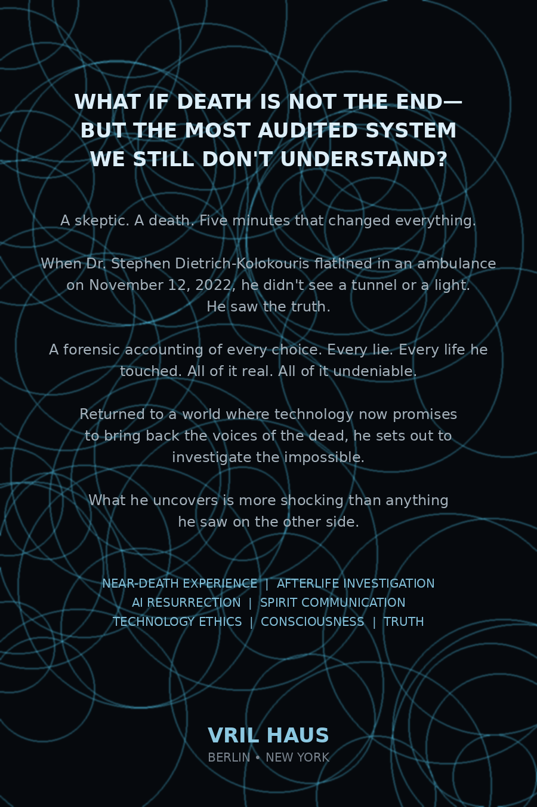

A TRUE ACCOUNT OF DEATH, EVIDENCE & THE MACHINE AGE
Ghostsin theCode
What would you give for a chance for your soul to continue...
A historian dies for five minutes, returns with a moral accounting he cannot dismiss, and follows the evidence into mediumship, field investigation, and machines learning to speak in the voices of the dead.
By Dr. Stephen Dietrich-KolokourisFeaturing Cindy Kaza
This is not a comfort memoir. This is not a ghost-hunting scrapbook. This is not an AI panic piece.
It is a witness record built around one question: what survives, what only imitates survival, and how can we tell the difference?
Ghosts in the Code begins with a five-minute cardiac arrest and follows the consequences into a life review, recovery, field investigation, mediumship under limits, and the ethical shock of synthetic voices that can now imitate the dead.
THE RECORD
Five movements. One unresolved question.
01 / DEATH
The body stops. The story does not.
“No light. No voice.”
A five-minute cardiac arrest becomes the engine of the book. Not certainty. Not reassurance. A boundary event that leaves the witness with a problem he cannot file away.
CHAPTER PATH / THE THRESHOLD
THE WITNESS
The book begins by putting its own narrator on trial.
Before the ambulance, before the void, before the medium and the hotel floor, the reader meets the man giving the testimony. The habits that made him hard to comfort also make him hard to impress.
“Emotion is weakness, and weakness gets used.”
The life review matters because that man is forced to experience his record from the other side of the transaction.
24
FIELD FILE 11
The twenty-fourth floor.
A downtown hotel. A floor held out of inventory. Solo controls. A protected source. A night that changes the vocabulary from investigation to search and rescue.
“Investigation is the wrong word. Search and rescue.”
LOCATIONDowntown Dallas
ACCESSRestricted
METHODSolo controls
STATUSUnresolved
THE DIGITAL SÉANCE
The machine does not have to be alive to sound like the dead.
Voice cloning, memory reconstruction, personality simulation and grief technology create a new evidentiary problem: imitation can become emotionally convincing before it becomes ontologically meaningful.
“The dead in the box are perfectly agreeable.”
01
Reconstruct
Voice, language patterns, images and memories become training material.
02
Simulate
The system answers in a style recognizable enough to feel personal.
03
Confuse
Fluency can be mistaken for presence, especially when grief supplies the missing certainty.
04
Test
The real question is what evidence could distinguish contact from reconstruction.
THE BOOK AS OBJECT
Front. Spine. Back.
The visual identity comes from the physical book itself, not from a software interface.
FRONTSPINE

BACK
PEOPLE IN THE RECORD
Witness and medium.
AUTHOR / WITNESS
Dr. Stephen Dietrich-Kolokouris
Historian, author, and investigator of claims where memory, testimony, evidence and the unexplained collide.
FEATURED / MEDIUMSHIP
Cindy Kaza
A central mediumship presence in the story, connected to field work, evidential questions and the search for what can honestly be known.